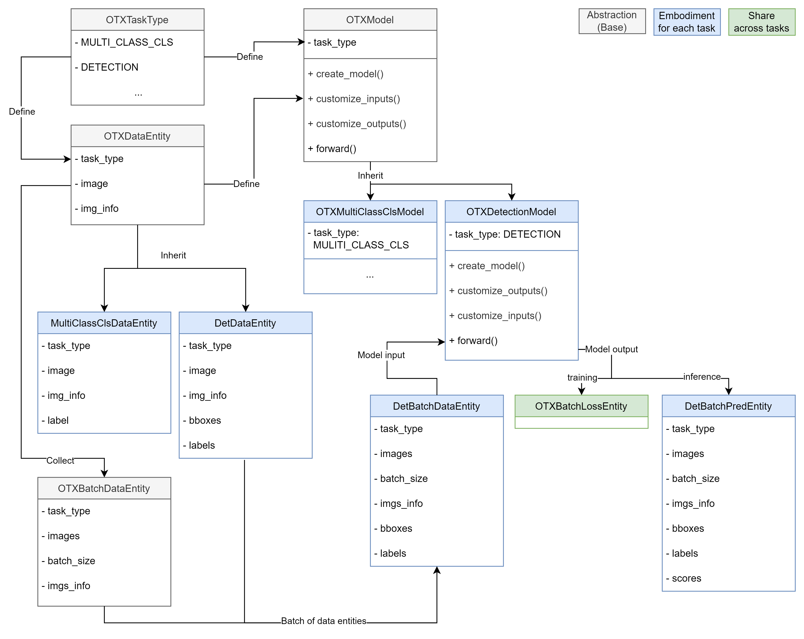
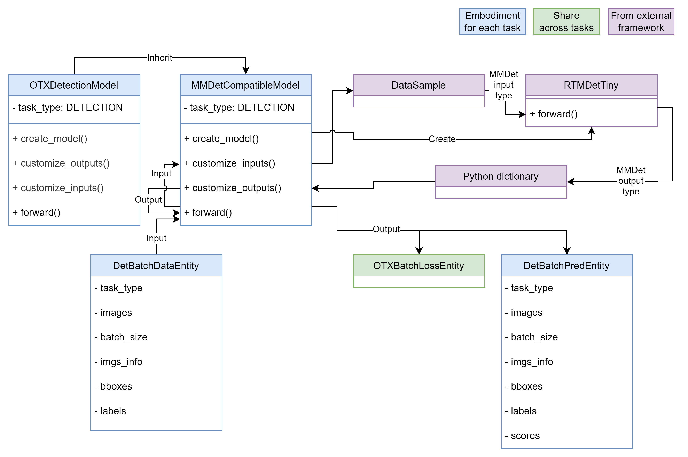
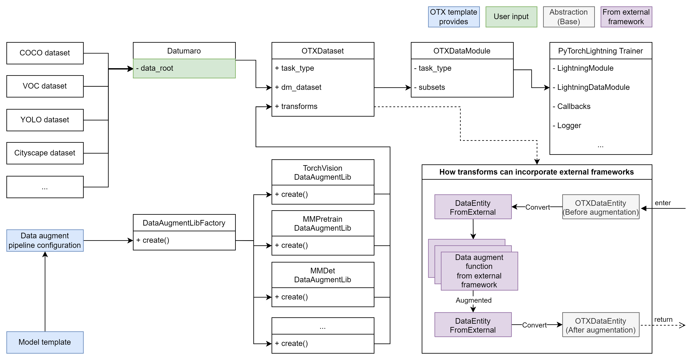
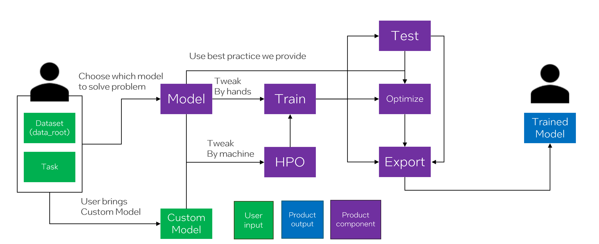
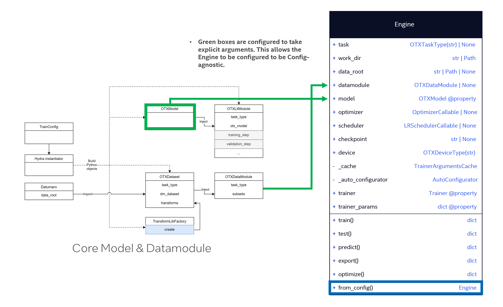

Product Design#
Our Product Mission#
Provide a deep learning model training framework that encompasses various tasks solvable by deep learning models. Our product aims to be convenient for developers, allowing them to easily expand support for tasks and models.
Empower users to seamlessly and intuitively navigate the OpenVINO™-based workflow, from model training to inference. To ensure a user-friendly experience throughout, our product should have user-friendly CLI and Python API entrypoints.
Support Intel devices for accelerating deep learning model training: We offer best practices for training from scratch or fine-tuning popular model architectures using Intel devices.
Product Design Principles#
To realize our product missions, we establish the following design principles and details, providing a comprehensive overview of our product’s structure.
Core#
Static Typing System for Task-Data-Model to Accelerate Task and Model Development Cycles
“Advocates of static typing argue that … a better design time developer experience…” [1]
Our framework should support various deep learning tasks simultaneously. To achieve this mission, it is essential to make it developer-friendly for expanding our product across three dimensions: task, data, and model. The key insight here is that, while these dimensions may seem independent, they can be interconnected into a single dimension, specifically the task, where both the data and model depend on. We believe that nice abstractions with static typing can help developers in this regard. Therefore, we here introduce the Task-Data-Model abstraction with static typing.

Figure 1. Task-Data-Model abstractions with static typing
As shown in Figure 1, there are abstractions (grey-colored boxes) that form the base for each task:
OTXTaskType: A Python enum defining the deep learning task supported in this framework.OTXDataEntity: A Python dataclass object representing a single data sample for eachOTXTaskType.OTXBatchDataEntity: A Python dataclass object representing a batch ofOTXDataEntity.OTXModel: PyTorch module (nn.Module) defined for eachOTXTaskType. Itsforward()function has strict typing: 1)OTXBatchDataEntityas inputs and 2)OTXBatchLossEntityorOTXBatchPredEntityas outputs.
On the other hand, we can see embodiments from the abstractions (blue-colored boxes) for the detection task (
OTXTaskType.DETECTION):DetDataEntityandDetBatchDataEntity: Python dataclass objects includingbboxesandlabelsfields for the detection task.DetBatchDataEntityis used for the input ofOTXDetectionModel’sforward()function.DetBatchPredEntity: Python dataclass object including thescoresfield beyondDetBatchDataEntity. It is used for the output ofOTXDetectionModel’sforward()function at inference mode.
As observed, a developer aiming to add a new model to OTX for the detection task only needs to consider the strictly typed input and output (
DetBatchDataEntityandDetBatchPredEntity).Conversely, in the event of a new task requirement, we can incorporate it by implementing embodiments from the base, such as
OTXTaskType,OTXDataEntity,OTXBatchDataEntity, andOTXModel.Single Engine but Capable of Incorporating Other Public Model Training Frameworks
“Don’t Reinvent the Wheel” [2]
We choose PyTorch Lightning [3] as the primary engine for our training framework. However, as you are aware, there are numerous open-source model training frameworks worldwide. Often, these frameworks are tightly coupled with their own engines, hindering the reuse of valuable data pipelines or model implementations. This goes against the well-known software engineering principle, “Don’t Reinvent the Wheel.”
Nevertheless, our
OTXModelclass features special abstract member functions that enable us to reuse model implementations from any framework. These special functions, namelycreate_model(),customize_inputs()andcustomize_outputs(), facilitate the conversion of our own data entity class to the format required by a model imported from an external framework.Let’s consider an example of importing a model from MMDetection [4]:

Figure 2. Import RTMDetTiny [5] model from MMDetection
In Figure 2,
MMDetCompatibleModelimplementscreate_model()to generate theRTMDetTinymodel and registers it as a child module. At this point, theRTMDetTinymodel requiresDataSampleinput from MMDetection and produces a Python dictionary for its output. These data entity types do not comply with our framework. To resolve this issue,MMDetCompatibleModelimplementscustomize_inputs()andcustomize_outputs()functions to convert them into our format. With this design, we can explicitly support major frameworks. We plan to continually expand the supported frameworks using this approach.Support Various Data Formats without Worrying about Customizing the Input Data Pipeline
“Much of the time for an AI project is likely to be spent on data-related tasks …” [6]
When developing a new deep learning model, one of the most tedious tasks is often creating a data pipeline for the given dataset. Developers must study the data schema of the provided dataset and parse it into a data entity consumable by both the data augmentation pipeline and the model.
To simplify and enhance this process in the model development lifecycle, we introduce Datumaro [7], a member of the OpenVINO™ open-source ecosystem. Datumaro allows the import of various data formats from around the world. Please refer to the following Figure.

Figure 3. Only the root directory path is provided by the user to make a data pipeline
In Figure 3, a popular data format such as COCO, VOC, YOLO, or Cityscape can be imported with Datumaro. While Figure 3 illustrates the entire data pipeline, the only input required from the user is
data_root. This simplicity allows users to enjoy a convenient model training workflow without worrying about the input data pipeline.Another advantage highlighted in Figure 3 is the support for multiple data augmentation pipelines. As shown, we demonstrate how to incorporate a data augmentation pipeline from an external framework. We provide the necessary online conversions before and after the data augmentation pipeline from the external framework. As a result, by adjusting or using the configuration from the template we provide, users can utilize not only the default pipeline from TorchVision [8], but also other pipelines such as MMPretrain, MMDetection, etc. This flexibility enables developers to freely compose the model and the data augmentation pipeline from various frameworks, accelerating the creation of custom model training templates for specific problem domains.
Authors: @wonjuleee @vinnamkim
Entrypoint#
User Workflow for OpenVINO™ Training Extensions
We defined the user workflow for the OpenVINO™ Training Extensions before defining the entry points to provide to users.

Figure 4. Definition of OpenVINO™ Training Extensions Workflow
As shown above, the User will define the Dataset and the Task they want to solve. OpenVINO™ Training Extensions will provide a model to solve that Problem. You can use the built-in model or choose from several models. Advanced Users can also import their own Custom Model.
The User will then define the Training Configuration and start the Training. Basically, OpenVINO™ Training Extensions provide a recipe that allows user to run the training and change the training parameters.
Users can also use HPO to help the machine find the optimal parameters. After training, the user can evaluate the model and deploy it to the edge device. We have defined this natural workflow, and the end result is that the user is provided with a trained model, a model that is available on the edge device, and an optimized model.
Designing Engine Classes for a Natural Workflow

Figure 5. Engine Class Diagram
As shown in Figure 5, we have designed the Engine classes to provide a natural workflow. In addition to the models and datamodules provided by OpenVINO™ Training Extensions’s core, Engine provides all the entry points that OpenVINO™ Training Extensions wants to provide through Engine.
By looking at the Engine class, users can see what OpenVINO™ Training Extensions is trying to provide and use it in a natural way. User configure Model and Data, and train it using a Trainer called Engine. The role of Model can be done in core’s Model, and Dataset-related things can be done in Datamodule, The rest, from training to deployment, will be handled by Engine.
Auto-Configurator to help novice users get started
Users without typical Trainer experience, such as Lightning, struggle to configure models and data pipelines. This stems from the structure of the Model, Datamodule, and Engine requiring separate configuration. To minimize this difficulty, OpenVINO™ Training Extensions uses a feature called Auto-Configuration. If the user does not provide the required input, whether it is a Model or Data pipeline, the Auto-Configurator fills in the gaps. This allows users to easily use OpenVINO™ Training Extensions by only configuring the dataset.
from otx.engine import Engine engine = Engine(data_root="<path_to_data_root>") engine.train()
(otx) ...$ otx train ... --data_root <path_to_data_root>
Authors: @samet-akcay @harimkang